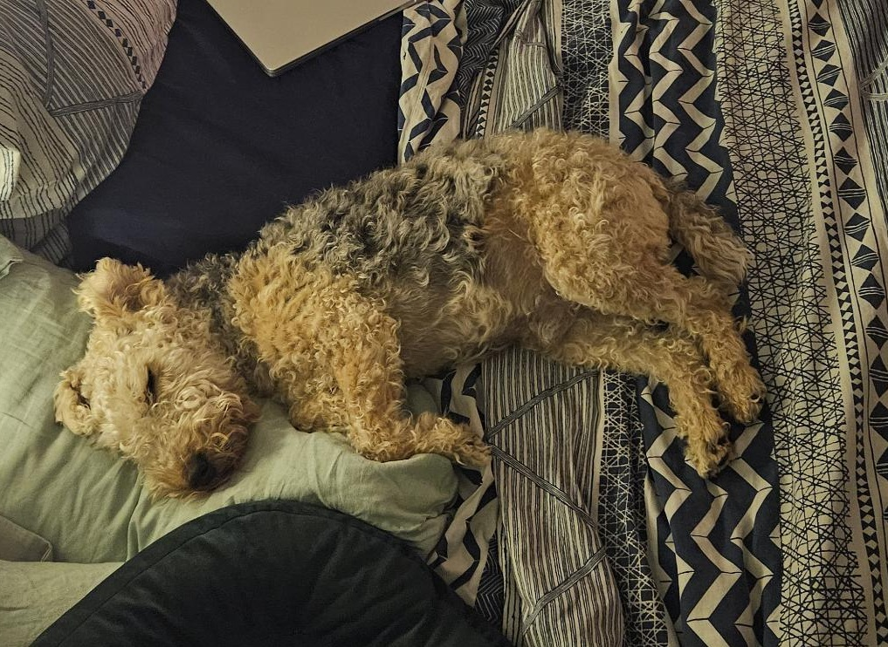

Hi!
I am a Research Associate at the University of Mannheim. I recently completed my PhD at the Swiss Graduate School for Public Administration, University of Lausanne.
My research focuses on questions at the intersection of immigration, citizenship, integration, allocation of rights to noncitizen residents, and public opinion. My dissertation examines citizen perspectives on extending voting rights to noncitizens contingent on demonstrating integration efforts. I employ surveys, survey experiments, and observational data, and plan to incorporate computational text analysis and interviews.

Education
- MA Political Science, University of Mannheim (2015)
- BA Political Science, Ohio State University (2013)
- BA German Language and Culture, Ohio State University (2013)
Background
I was Managing Editor of the American Political Science Review (2016–2020), heading the first European-based editorial team across three institutions.
Outside of work
Skiing, hiking, fitness, yoga, arts and crafts, furniture upcycling, baking, wine, and reading (classics, fantasy, sci-fi, autobiographies, nonfiction). I'm also slowly writing a fantasy novel.

This is my dog, Neville.
He's 9.5 years old and an absolute curmudgeon. He enjoys balls and disassembling toy squeakers.